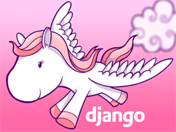

{kind=link}
image: http://djangopony.com/
image: http://djangopony.com/
Wherein we extend our Django blog app.
Agenda:
- Class website - where to find this week's materials
- Status of our Django blog
- Intro to Agile
- Pair programming
- Lightning Talks (Ninad Naik, Abdishu Hagi, Beatrice He, James Richardson)
- Pair programming
- Homework and plan for next week
Class website - where to find this week's materials
Last week, we created a nice, simple Django microblog application.
Over the week, as your homework, you made some modifications to improve how it works.
There's still quite a bit more we can do to improve this application.
And today, that's what we are going to do.
Demo blog
You and your partner can work on any of the following enhancements
Choose one to start with - if you finish it, start another!
Use your partner first to work with any issues that arise
Use the proposed resources, but you may still need to troubleshoot, research, and find other materials
Goals:
Goals:
Goals:
Django All-Auth and Facebook
Goals:
Resources:
Alternatives to traditional project management
A set of principles for software development
Designed to help teams respond to unpredictability
Emphasis on incremental iterative work cadences and empirical feedback
(Source: http://agilemethodology.org/)
Two programmers work at one workstation
Driver - writes code
Navigator - reviews code, observes, considers improvements or changes in direction
The two programmers switch roles frequently
In order for this to work properly, we'll need to have a few things in place.
For the time being, all these actions should only be taken by one partner.
First, we'll start from a canonical copy of the microblog. Make a fork of the following repository to your github account:
https://github.com/christyheaton/mysite_start_session09.git
Then, clone that repository to your local machine:
$ git clone https://github.com/<your_name>/mysite_start_session09.git
I'll make an announcement when its time to switch
We'll take a break for lightning talks
And hear your thoughts on Pair Programming at the end
Finally, you'll need to add your partner as a collaborator for your new repository.
Go to the settings for your repository.
Click the collaborators tab on the left side of the window (you'll need to enter your github password).
Look up your partner by email address or github username.
Add them.
Then your partner can clone the repository to their desktop too.
Now, when you switch roles during your work, here's the workflow you can use:
$ git commit -a -m "Time to switch roles"
$ git push origin master
$ git pull origin master
Let's get started!
How did it go?
Next week, we will deploy your Django application to a server.
To help illustrate the full set of tools at our disposal, we'll go a bit overboard for this.
We'll be setting up an HTTP server, proxying to a WSGI server serving your Django app.
We'll do this all "In the cloud" using Amazon's AWS service.
Before class starts, you'll need to accomplish a few non-programming tasks
Begin by going to the AWS homepage and clicking on the large, yellow button that reads "Sign In to the Console".
On the sign-in page that appears, click the radio button for 'I am a new user', fill in your email address, and then click through to begin the sign-up process.
You will be required to provide credit card information.
If you are still eligible for the AWS free tier, you will not incur any charges for work you do in this class.
Once you've signed up for an account take the following actions:
$ chmod 400 ~/.ssh/pk-aws.pem